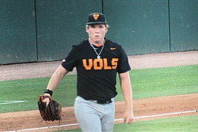

BASEBALLKEEP
Dynasty · Redraft · Diamond
Player File · SP STL

Liam Doyle
SP · STL · age 22
No MLB box score yet — prospect file. The Keep rank is the projection, not a 2026 line.
Plus
- Age 22 — still climbing the curve.
- The long boards already stuffed him. That is how Keep names get made.
Minus
- Board spread is 68 ranks. You are betting with one camp, not a unanimous tape.
- No 2026 MLB line yet — prospect file. The rank is the projection, not the box score.
- Keep #288 is the edge of the 300. Deep-league / taxi-squad more than a foundation chip.
BaseBallKeep Take
Liam Doyle is #288 on BaseBallKeep's overall dynasty 300, a 23-source mix anchored by RotoGraphs (Aug 14) and The Dynasty Guru points list (Aug 10). SP for STL. Rest-of-season redraft #288. Still a prospect clock.
BK Value on this rank is 38. Same decaying curve as football: 12,000 at 1.01, a late first a fraction of that. If someone is asking for two firsts, run the calculator.
The 23-board average is 295.0 on 2 lists that actually ranked him — unranked sources are skipped, never treated as 999. High 261, low 329.
Dynasty pays the next five years. Redraft pays September. If those two ranks diverge, that is the instruction: hold the kid or cash the veteran.
Flags fly forever. We will refresh this file with The Keep. September baseball is a proving ground, not a coronation.
Every Board
Spread 261–329 · 2 sources
| Source | Rank |
|---|---|
| RotoGraphs Model | 261 |
| TDG Points | 329 |
On The Keep nearby — Tanner Scott (#286) · Jordan Westburg (#287) · Yainer Diaz (#289) · Rainiel Rodriguez (#290)
Same position on the 300 — Paul Skenes #5 · Jacob Misiorowski #7 · Tarik Skubal #12 · Cristopher Sánchez #16 · Garrett Crochet #18 · Yoshinobu Yamamoto #24
All players · The Keep · The Lineup · Pitchers · Calculator